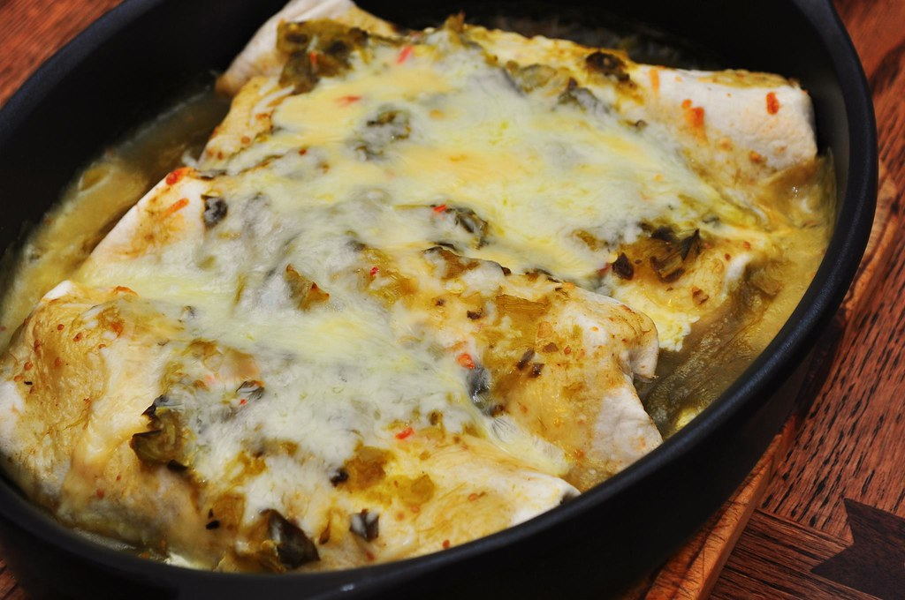

Chicken Enchiladas with Creamy Green Chile Sauce
Home

Why You'll Love This Recipe
This recipe for enchiladas with green chile sauce makes chicken- and cheese-filled corn tortillas baked under
a
creamy sauce infused with hot peppers. Adjust the amount of chopped chiles to suit your taste!
Ingredients:
- 2 tablespoons vegetable oil, or more as needed
- 12 corn tortillas
- 3 cooked boneless skinless chicken breast halves, shredded
- 12 ounces shredded Monterey Jack cheese, divided
- 3/4 cup minced onion
- 1/4 cup butter
- 1/4 cup all-purpose flour
- 2 cups chicken broth
- 1 cup sour cream
- 1 (4 ounce) can chopped green chiles, drained
- 1/2 cup chopped green onions
- 1/2 cup chopped fresh cilantro
Directions
- Gather the ingredients.
- Preheat oven to 375 degrees F (190 degrees C). Grease a 9x13-inch baking dish
- Heat 2 tablespoons oil in a skillet over medium-high heat. Fry tortillas (one at a time) for 5 seconds on
each side to soften and make them pliable. Add more oil to the pan as needed.
- Drain between layers of paper towel and keep warm.
- Divide chicken, 10 ounces Monterey Jack cheese, and onion among 12 tortillas.
- Roll up each tortilla and place seam-side down in the prepared pan.
- Melt butter in a saucepan over medium heat. Add flour and whisk until mixture begins to boil. Slowly add
chicken broth, stirring with a whisk until thickened. Mix in sour cream and green chiles, stirring
occasionally. Heat thoroughly but do not boil.
- Pour mixture over enchiladas.
- Bake in the preheated oven until bubbly and heated through, about 20 minutes.
Top with remaining Monterey Jack cheese and bake for 5 more minutes.
- Garnish with chopped green onions and cilantro.
Enjoy!